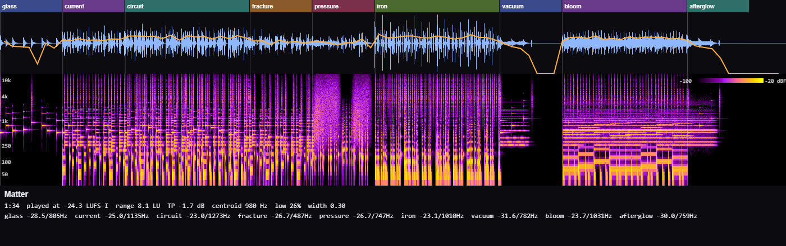

Matter.
Glass. Circuitry. Heavy metal.
Then a little room to breathe.
An original miniature score and a hands-on sound bench. Matter starts with pure synthesis. Further down, Fuse gives a recorded metal strike a designed body.
Loading the session…
Glass
A struck overtone hangs in the air. A few grains of dust answer.
ADDITIVE PARTIALS / POISSON GRAINS
The sound bench
Strike a pad. Your browser builds the sound from its patch—these aren’t audio files. Try it over the reel; the music steps back while the effect plays.
Keys 1–8 play the pads · Space plays / pauses the current sound · Esc stops everything
Open the session notes
Small recipes. Big range.
Matter uses thirteen parts, eight synthesis source types, voice-led harmony, seeded timing, stereo double-tracking and a shared effects bus. The score is rendered through the same Web Audio engine that plays the pads.
The orange line above follows measured loudness. The spectrum monitor follows the actual output. Open the source and change a note, a resonant mode or an entire scene.
Room for the transients.
The scenes deliberately change density and level. The effect pads use measured trims, a single-voice limit and the engine’s output safety curve.
Music & sound design: composed with agent-beeps. Matter uses procedural synthesis throughout. The public booth stores no votes or listening history.

Touch
Same notes. Same groove. A different touch.
Listen for the soft notes opening slowly, the accents finding an edge, and the lead leaning into a held note. Switch takes anywhere; the player keeps your place.
92 BPM · FM LEAD · MATCHED LISTENING LEVEL
A · Plain: velocity changes loudness.
Download the expressive score ↓ · Plain score ↓
B adds velocity-shaped tone and attack, pitch scoops, delayed vibrato and per-note brightness. Both takes share the notes, note velocities, instruments and arrangement.
Flux
Same oscillators. Same pitch. Different motion inside the sound. Compare a fixed modulation index with a breakpoint envelope: a strike sheds its edge, a discharge folds inward, a machine changes pressure.
A holds the index at its peak. B shapes it over time. Each pair is matched in measured max-momentary loudness.
Loading the synthesis study…
Fuse
A recording supplies texture; synthesis gives it a new body. Compare a metal strike and two gun recordings: first each recording, then pure synthesis, then the two together.
Each row has three individually leveled comparisons, matched in measured max-momentary loudness. The hybrid’s relative layer balance differs from the solos. These are listening comparisons, not stems to sum.
Loading the material study…
The metal row’s recorded detail comes from Kenney’s Impact Sounds 1.0, released under CC0. A short fade tidies the edges. Inharmonic resonances add weight; a changing FM tone and scattered grains carry the strike into a room.
Metal source license ↗ · Metal source & preparation credits ↗
The metal preparation download includes the full normalized recording and an exact replay recipe. Both include credits and CLI instructions. Stop / Esc and the master volume above control every take.